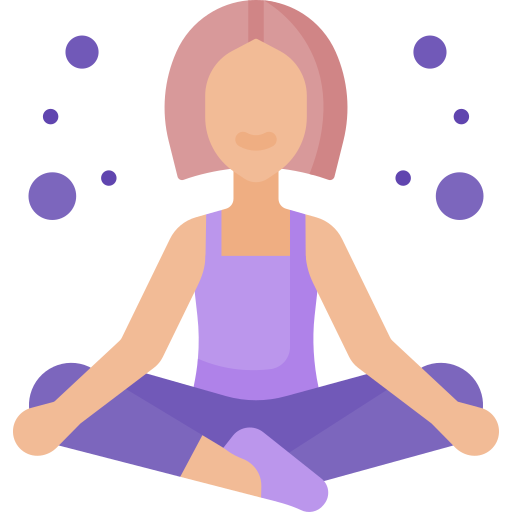

Особенности хатха-йоги и её отличия от других направлений
Хатха-йогу считают прародительницей большинства школ, потому что
самые первые упоминания древних индийских текстов о йоге начинаются
именно с нее. В переводе с санскрита «Ха» переводится как вдох или
открытая энергия, а «Тха» — пассивная энергия или выдох. Часто можно
встретить описание «Ха» как солнечное дыхание, а «Тха» — лунное и
это тоже правильно. Само понятие йоги означает «союз» или «связь» и
получается, что хатха-йога — связь вдоха и выдоха, солнечной и
лунной энергии, баланс.
Таким образом цель хатха-йоги кроется в ее названии — прийти к
балансу внешнему и внутреннему, через глубокие практики работы с
телом, сознанием и духом. В хатха-йоге нет задачи идеально выстроить
асану, как например в йоге Айенгара. Здесь большее внимание
уделяется не столько физическому аспекту, сколько дыханию,
внутренним ощущениям и концентрации. В хатха-йоге большинство асан
статично, т.е. мы выходим в какую-то из них и задерживаемся от 30
секунд до нескольких минут, стараясь отслеживать свои ощущения как
на уровне тела, так и ума. Если, к примеру, в виньяса йога флоу одно
движение тут же сменятся другим, создавая иллюзию медитативного
танца, то в хатха-йоге вы такого не увидите.
В системе хатха-йоги кроме асан большое внимание уделяется
дыханию (пранаямам) и шаткармам (очистительным техникам). Считается,
что это наиболее целостный подход, который позволяет человеку
совершенствоваться не только физически, но и духовно, на более
тонком уровне, очищая тело и ум от ментальных загрязнений и
ограничений. Обычное утро практикующего хатха-йогу начинается с
полного йоговского дыхания, медитации и джала нети — промывания носа
водным раствором соли.
Польза и противопоказания хатха-йоги
За счет того, что практика хатха-йоги включает себя не только работу
с телом (асаны), но и дыхательные практики (пранаямы), очистительные
техники (шаткармы), медитации, она оздоравливает организм на всех
уровнях. Давайте подробнее разберем каждый:
1. Асаны (физические упражнения) улучшают физическое здоровье,
укрепляют мышцы, делают тело гибче и выносливее, помогают в
профилактике сердечно-сосудистых заболеваний.
2. Пранаямы
(дыхательные упражнения) увеличивают объем легких, насыщая организм
кислородом в необходимом объеме. А еще правильное глубокое дыхание
расслабляет, успокаивает и повышает уровень энергии.
3.
Медитации помогают расслабиться в полном смысле этого слова. Не
просто удобно полежать с закрытыми глазами, а почувствовать глубокое
расслабление на уровне ума, в состоянии без мыслей, стресса, страхов
и забот — разве не этого мы все хотим в нашем вечно спешащем мире?
4. Шаткармы (очистительные техники) которые помогают
поддерживать в чистоте тело и ум. «Шат» с санскрита значит шесть,
«карма» — действие. Имеется ввиду 6 типов упражнений, которые
необходимо выполнять для поддержания внешней и внутренней гармонии.
Виды шаткарм: Дхаути — очищение ЖКТ, Басти — промывание толстого
кишечника, Нети — очищение носовых проходов, Тратака- очищение
слезных каналов, практика созерцания (как правило на пламени свечи),
Наули —массаж органов брюшной полости, Капалабхати — стимуляция
головного мозга и очищение носовых каналов.
В каких случаях от занятий лучше отказаться?
1. Повреждения позвоночника.
2. Психические расстройства.
3. Заболевания крови.
4. Послеоперационный период.
5. Черепно-мозговые травмы.
6. Злокачественные новообразования.
7. Серьезные
проблемы с сердцем: пороки, аритмия и др.
Нельзя заниматься хатха-йогой после еды, массажа, парной. Если
вы побывали в бане, то придется выждать, как минимум, 6 часов. Что
касается беременности, то нужно смотреть на общее самочувствие. Не
стоит практиковать йогу в последнем триместре. Не являются
противопоказанием менструации. Занятия в это время должны быть
максимально мягкими.
Практики хатха-йоги — это система оздоравливания человека на
всех уровнях, возможность ощутить жизненную опору и найти тот самый
баланс, к которому каждый из нас стремится. Но как подступиться к
такому интересному и многообразному направлению правильно, ведь
самому очень сложно грамотно освоить шаткармы, пранаямы и понять
нюансы медитаций? Для того, чтобы вы могли правильно начать
заниматься хатха-йогой, избежав серьезных ошибок в практике и
главное — не навредить себе, а получить максимальную пользу и
удовольствие от процесса, мы создали уникальный курс, где ведущие
преподаватели поделятся своими знаниями и опытом.
Практическое применение
В чём польза занятий:
Занятие йогой - это важный шаг к самосовершенствованию

Улучшение дыхания
Хатха-йога также фокусируется на дыхательных упражнениях, таких как пранаяма. Эти практики помогают улучшить качество дыхания. Умение контролировать дыхание также является мощным инструментом для снятия стресса и повышения энергии.
Улучшение концентрации
Практика медитации в хатха-йоге помогает улучшить концентрацию и ясность ума. Это может быть особенно полезно в современном мире, где мы постоянно подвергаемся различным видам отвлечений.
Поддержание общего здоровья
Регулярная практика хатха-йоги может помочь в поддержании общего здоровья. Влияние йоги на снижение давления, улучшение сна и даже поддержание здоровья сердца подтверждается многими исследованиями.
Что Вас ждет в течение 3 дней
Обучение проходит в удаленном режиме. Ежедневно вам будут приходить уроки и практические задания от мастера йоги. Вы сможете пройти теорию в любое удобное время, а по выходным и вечером в будние дни будут проводиться уникальные вебинары с мастером.
Настоящие отзывы
Посмотрите восторженные отзывы учеников, которые уже
начали заниматься йогой и стали жить счастливо